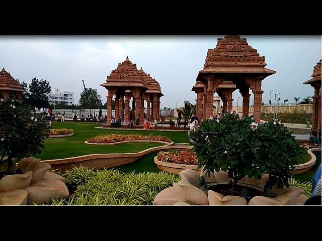

BACKShri Swaminarayan Mandir

Open to one and all, the BAPS Shri Swaminarayan Mandir was
inaugurated in Feb of 2017 after only 24 months of
construction time. The Mandir is about 184.6 feet long by
181.6 feet wide and 74.6 Feet High, covering 33,523.36 sq.
ft. of Aera. Fully Stone Carved without any Steel. It is
Designed as Southern Shilpa shalli by Soapura. The Mandir
has 23 Saarans of which 7 are Giant ones which Beautifies
the Mandir from surroundings. Mandir is carved by hand
Rajasthan and assembled in Lilburn like a glant 3-0 puzzle.
Mundir is set upon 140 Carved Pillars. It also has about
100 Beautiful Toran with 10,269 Carved sculpture and
Deities which is Representing the Heritage of Maharashtra
and India. It represents True Devotion of Guruhari Pramukh
Sant Maharaj, Guruhari Mahant Swami Maharaj and all Devoted
Santo, Hari Bhakto.
The Mandir is comprised of Indian pink Sandstone and Red Stone.
>